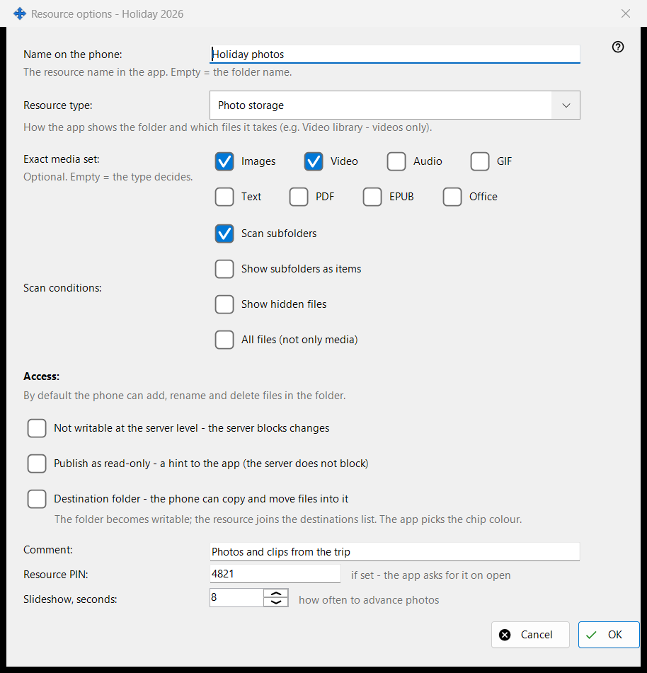
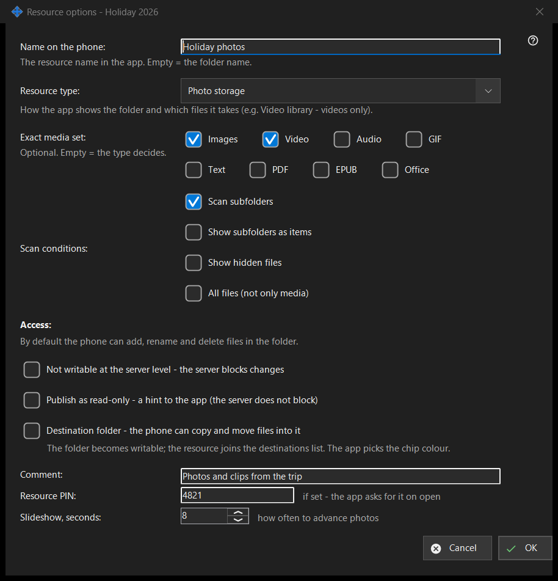

Resource options
What this is for
Options of one shared folder: its name on the phone, the type, which files are shown, who may change them and a few extras. It opens from 'Edit' in the main window, from a folder row, and from the resource wizard. The real caption ends with the folder name.


In this order
- Set the name the phone will show.
- Choose the resource type or an exact media set.
- Set the scan conditions.
- Choose the access.
- Open 'Advanced options' for a comment, a PIN and the slideshow interval.
- Press OK.
The elements
Name and type
'Name on the phone:' is how the folder is named in the app; empty means the folder name. 'Resource type:' offers Regular folder, Audio library, Video library, Photo storage and Documents. 'Exact media set:' picks the exact kinds (Images, Video, Audio, Text, All files); empty means the type decides.
Scan conditions
Scan subfolders, show subfolders as items, show hidden files and show all files, not only media.
Access
By default the phone can add, rename and delete files in the folder. Read-only is a real lock: the server refuses changes. A read-only hint only tells the app to hide edit buttons; the server does not block. A destination folder can receive copies and moves from the phone; it becomes writable and joins the list of recipients, and its colour is chosen by the app.
Advanced options
A comment (optional), a PIN for the resource (the app asks for it when the resource is opened) and the slideshow interval in seconds. Settings are sent to the server when you confirm.
Manager settings · SFTP sharing settings · Exchange server settings